Everything you will ever do
happens inside a unit of time.











A Time Block captures both what you intended to do and how it was actually lived.
What you plan to do
The activity itself — defined by the title and organized into context through tags.

When it occurs
The time you set aside — the window in which this experience will happen.

Who it will be with
The people — because how time is experienced is inseparable from who shares it.

Where it will take place
The location — home, office, a park, a restaurant. Place shapes experience.
Pillar Designation
Work. Life. Health. Sleep. Every Time Block is automatically sorted into one. Together, they define the life you intend to create — and reveal whether your time reflects it.
Set Your Intention
Split your 168 hours each week across four pillars. This becomes the benchmark Existence measures your time against.
Each Time Block begins as the ideal you.
After it's lived, it becomes the real you.
The same block transforms to capture how time was actually experienced.
At the center is a
continuous cycle
SCALE
On a typical day, you create 15–20 Time Blocks.
Strung together, they become a complete picture of how your time was created.
A single block becomes a timeline. A timeline becomes a life.
At the center is a
continuous cycle
Engineer
You give your time structure before it is experienced. Each block is an act of intention.
Record
You capture how your time was actually created. Intention meets reality.
out of 10
Reveal
Your time becomes visible and measurable. Patterns surface that were invisible before.
Data Explorer
Navigate your time across days, weeks, and pillars
AI Summaries
Weekly and monthly intelligence on your patterns
“E” Assistant
Ask anything about your time history
THE LOOP CLOSES
What you see changes
what you do next
Now it's no longer three steps.
It's a system in motion.
COMPOUNDING
Each cycle builds on the last
Every loop refines your awareness of how you spend time.
PATTERNS
Patterns in your time
begin to emerge
Weeks of data become a visible map of who you are.
ALIGNMENT
The gap between intention and
what you create becomes visible
THE RESULT
Time Alignment
When the time you create consistently reflects the life you intend to live.